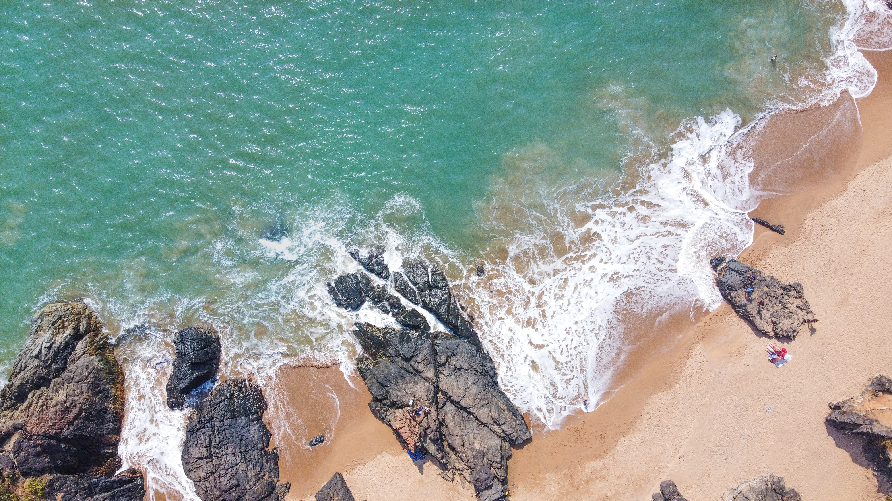

Gokarna
Known for its idyllic beaches and pristine waters, Gokarna is a favorite among travelers who seek a peaceful vacation. It is the more laid-back and less commercialized version of Goa. Other than the famous Om beach, it has Kudle beach and the more secluded Half Moon and Paradise beach.
3000 INR